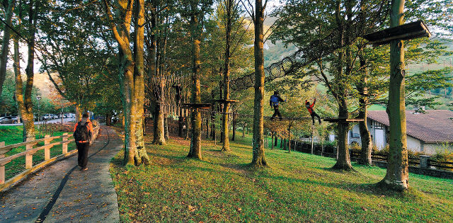
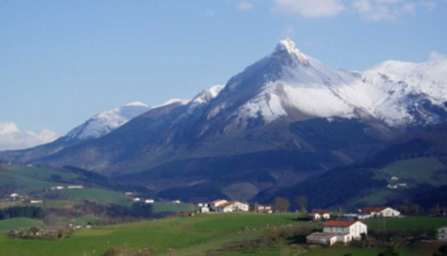
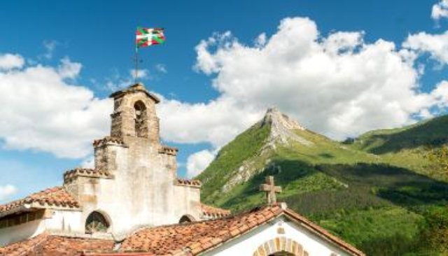

Rutas y recorridos

Ruta accesible de Larraitz
Esta sencilla ruta está adaptada a cualquier visitante.
- Dificultad: baja
- Distancia: 1.5 kilometros
- Desnivel: 20 metros
- Tiempo aproximado: 1 hora

Subida al monte Txindoki desde el parking de Larraitz
Ascensión al emblemático monte donde la mitología vasca dice que vivía Mari, la diosa de la Naturaleza.
- Dificultad: alta
- Distancia: 10.5 kilometros
- Desnivel: 900 metros
- Tiempo aproximado: 6 horas

Circular a la Ermita
Ruta circular para visitar la ermita del siglo XIV que esconde un secreto ancestral... ¡Descúbrelo!
- Dificultad: baja
- Distancia: 5 kilometros
- Desnivel: 100 metros
- Tiempo aproximado: 2 horas